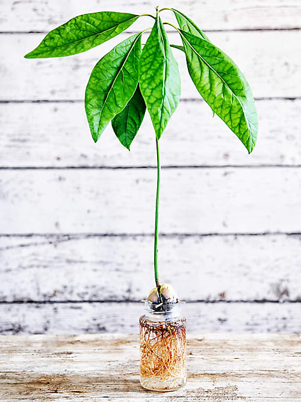

Hacks
How to pick the right avocado
Die Farbe der Avocados sagt nichts über die Reife aus, da es viele verschiedene Sorten gibt. Viele denken, dass man merkt, ob die Avocado reif ist, wenn man die Härte spürt. Doch eigentlich muss man oben an der Avocado den braunen Resten vom Stiel wegnehmen. Wenn dieser von alleine wegkommt, dann ist die Avocado reif.
Trotzdem kaufst du im Laden am besten eher harte Avocados, damit diese zuhause nachreifen können.
How to cut an avocado
Zuerst sollte man die Avocado waschen, da sonst beim Schneiden Bakterien in die Avocado gelangen könnten. Herum schneiden und dann die beiden Hälften in gegensätzliche Richtungen ziehen. Danach mit dem Messer in den Kern schneiden und herausdrehen.
Dann kannst du in der Schale ein Gittermuster reinschneiden und mit dem Löffel herausnehmen. Oder direkt mit dem Löffel herumgehen, damit sie in Streifen geschnitten werden können.
How to store an avocado
Wie bereits erwähnt sollten Avocados zuerst zuhause nachreifen, bevor aus ihr beispielsweise eine leckere Guacamole entstehen kann. Deshalb sollten Avocado zusammen mit einem Apfel in einer Papiertüte bei Zimmertemperatur aufbewahrt werden. Der Apfel gibt das Reifegas Ethylen ab, welches den Reifeprozess der Avocado beschleunigt.
What to do when the avocado is not ready
Wenn du wieder einmal eine steinharte Avocado gekauft hast, sie aber unbedingt jetzt sofort essen möchtest, gibt’s einen kleinen aber einfachen Trick: Avocado mit Alufolie umwickeln und bei 90 Grad für zehn Minuten im Ofen backen. Schon ist die Avocado reif!
Und keine Sorge, in der kurzen Zeit wird sie auch nicht zu heiss, um zu essen.
What to do with the other half
Wenn du nur eine halbe Avocado brauchst und nicht möchtest, dass die andere Hälfte beim Aufbewahren braun wird gibt es einen Trick, um diese aufzubewahren. Lege die Avocado-Hälfte einfach in ein Tupperware mit einem Zwiebelstück und bewahre sie im Kühlschrank auf. Am besten lässt du den Kern drin. Die Schwefelverbindungen der Zwiebel (das sind die, die uns sonst immer zum Weinen bringen) halten die Avocado mehrere Tage lang frisch und verhindern, dass sie braun wird. Was auch gut funktioniert: Olivenöl oder Zitronensaft über die Frucht streichen, mit Frischhaltefolie umwickeln und ebenfalls im Kühlschrank aufbewahren. Die Avocados bleibt dann ungefähr noch drei Tage reif.
How to grow your own avocado plant
Um den Avocadokern nicht einfach wegzuwerfen, kannst du ihn anpflanzen. Hier eine kleine Anleitung dazu:
- Stecke drei Zahnstocher mittig in den Avocadokern. Aber vorsichtig: Nicht zu tief stechen, sonst beschädigst du den Kern.
- Nun füllst du ein Glas mit Wasser und setzt den Kern so darauf, dass die Zahnstocher am Glasrand aufliegen. Der Kern sollte etwa bis zur Hälfte im Wasser liegen und die spitzere Seite nach oben schauen.
- Das Glas sollte an einem sonnigen Platz in der Wohnung stehen. Außerdem musst du regelmäßig Wasser nachgießen, sodass der Kern immer bis zur Hälfte mit Wasser bedeckt ist.
- Nach einigen Wochen wird der Avocadokern Keime entwickeln. Jetzt kannst du den Kern in einen Topf mit Erde umpflanzen.
